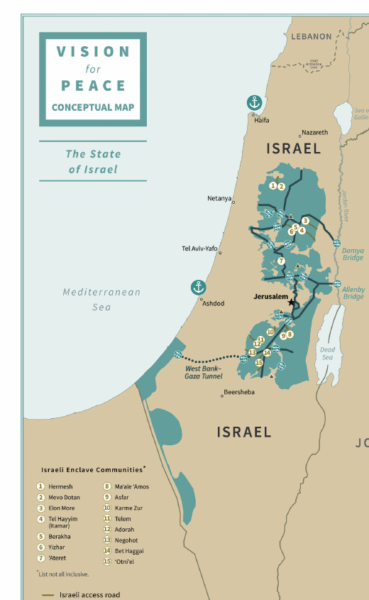

The plan text states that Israel "will not have to uproot any settlements" and that about 97 percent of Israelis in the West Bank would be in "contiguous Israeli territory." The rest would live in "Israeli enclaves" inside Palestinian territory, linked to Israel by access roads, under Israeli civil administration and Israeli security responsibility (plan text, Section 4).
The conceptual map names 15 enclave communities: Hermesh, Mevo Dotan, Elon Moreh, Itamar, Bracha, Yitzhar, Ateret, Ma'ale Amos, Asfar (Metzad), Karmei Tzur, Telem, Adora, Negohot, Beit Hagai and Otniel. The map adds that the list is "not all inclusive" (map itself; Arutz 7, January 28, 2020).
During negotiations, the plan says, Israel will not build new settlements, expand existing ones, or advance plans in areas not intended to become part of Israel. It also will not expand the enclaves "beyond their current footprint" (plan text, Section 22). The plan does not itself use the words "four years" for this freeze. The four-year period appears on the conceptual map's land designations and was set out by Ambassador David Friedman in an interview with Israel Hayom: Israel must keep the door open to negotiations for four years and accept a partial freeze on the 15 enclaves (Arutz 7 report of the interview; Times of Israel).
The map was "conceptual," drawn at a very small scale. At the White House, Trump said: "We will form a joint committee with Israel to convert the conceptual map into a more detailed and calibrated rendering so that recognition can be immediately achieved." Friedman later wrote that applying Israeli law was "subject to the completion [of] a mapping process by a joint Israeli-American committee." The committee had six members, three from each country; the American side included Friedman, his adviser Aryeh Lightstone and Scott Leith of the National Security Council (Times of Israel, citing Israel Hayom).
Against the plan. The Times of Israel reported that what appeared to be a majority of the 24 settlement mayors voted for the Council's resolution rejecting the plan. Named members of this camp included David Elhayani, Yossi Dagan (Samaria) and Yochai Damri (Har Hebron). Their position was opposition in principle to any Palestinian state, however small. Binyamin Regional Council head Israel Ganz welcomed the sovereignty element when the plan appeared but opposed a Palestinian state and isolated settlements. Mr. Ganz's precise stance in the later stages rests on a single summary and is unconfirmed.
For the plan. On January 28, Oded Revivi, mayor of Efrat and the Council's foreign envoy, said the plan "isn't perfect, maybe isn't even close to perfect," but "offers real gains for the settlement project." In May he organized a statement by eight settlement leaders urging support. It called the plan a "defining test," comparable to the Zionist movement's decision on the 1947 UN Partition Plan. Signers included Ariel mayor Eli Shaviro, Elkana council head Assaf Mintzer and Har Adar council head Haim Mendel Shaked (Times of Israel). The full list of eight names is unconfirmed. This camp, largely from towns near the Green Line, argued that the Palestinian Authority was unlikely to meet the plan's conditions for statehood, so the risk was small, while US recognition of sovereignty was a rare opportunity (Times of Israel).
The Council's director. Yigal Dilmoni, director of the Yesha Council, joined Elhayani in meetings with Likud, Jewish Home and Yamina lawmakers to persuade them to oppose the plan (Times of Israel).
On June 3, 2020, Elhayani told Haaretz that Trump and Jared Kushner had shown through the plan that "they are not friends of the State of Israel," that they "do not have Israel's security and settlement interests in mind," and that they cared about "their own interests ahead of the upcoming election." He was answering reports that US officials had called the settlers' campaign ungrateful (Times of Israel; AP; Haaretz).
The reaction was broad. Netanyahu condemned the remarks, saying that "President Trump is a great friend" of Israel (AP; Haaretz). Naftali Bennett, who also opposed Palestinian statehood, called Trump "a huge friend of the State of Israel." Yochai Damri, who opposed the plan, said: "to say that he's not a friend of Israel? I completely disagree with that" (Times of Israel). A week later Elhayani told Walla: "I stand my ground, I'm not apologizing. I don't call someone who puts the State of Israel at risk a friend" (i24NEWS, citing Walla).
Netanyahu had named July 1, 2020 as the earliest date to begin applying sovereignty. On June 2 a source told the Times of Israel that US approval by that date was "highly unlikely." White House meetings in late June ended with no decision (Axios). Defense Minister Benny Gantz told the US envoys Avi Berkowitz and David Friedman that July 1 was "not sacred" (Times of Israel). No step was taken on July 1 (Council on Foreign Relations).
On August 13, 2020, Israel and the UAE announced that they would establish full relations. The joint statement said that "Israel will suspend declaring sovereignty" over the areas in the US plan (Reuters). Netanyahu said annexation was only "temporarily" on hold at Trump's request (Reuters; Times of Israel). The Emirati side said the agreement "immediately stops" annexation (Council on Foreign Relations).
Those who backed the plan argue that the settlement leadership lost a US offer of recognition by insisting on better terms. Opponents argue that they prevented Israeli acceptance of a Palestinian state and of isolated communities. Both arguments continue.
The US position has since changed. In September 2025 Trump said: "I will not allow Israel to annex the West Bank" (Reuters; Arutz 7). In October 2025 two annexation bills passed only a preliminary Knesset reading (Times of Israel; CBS). On February 9, 2026, a White House official repeated Trump's opposition, a day after the cabinet approved measures on land registration, land purchase and planning in Judea and Samaria (Arutz 7, citing Reuters). The government's course has been to change the civil and legal structure on the ground rather than to declare sovereignty. The Knesset election is set for October 27, 2026 (Times of Israel).
